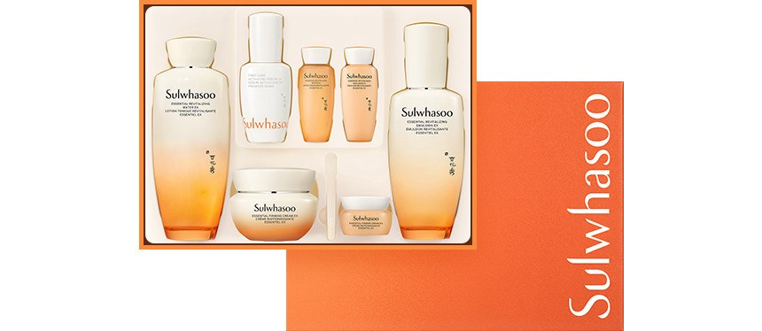
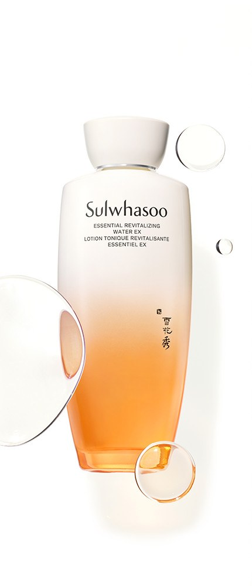

Sulwhasoo Essential Firming Set Review at a Glance
This Sulwhasoo Essential Firming set review is for anyone choosing a first prestige Korean skincare routine or a gift that does not need a lot of explaining. Sulwhasoo (설화수) is Amorepacific's luxury herbal-inspired brand, and this Korean 탄력 3종 기획세트 pairs a toner, an emulsion and a firming cream in one orange carton.
In Korea the set is sold around gifting seasons: three full-size products plus a small tray of samples. It is the "everything you need for a basic routine" option from a name people recognise on sight.

What Is in the Set
Here is the lineup as printed on the pack photography and the Korean listing text:
| Piece | Product | Size |
|---|---|---|
| Toner | Essential Revitalizing Water EX | 150 ml |
| Emulsion | Essential Revitalizing Emulsion EX | 125 ml |
| Cream | Essential Firming Cream EX | 50 ml |
| Samples | Serum-type bottle (listed as a 15 ml 윤조에센스) plus mini bottles and a mini cream jar | Minis — check your carton |
The bottles are the brand's signature white-to-amber gradient glass, and the cream jar has the same cream-to-orange fade. The orange carton makes the whole thing look gift-ready before you open it.


How to Use It
- Toner after cleansing: press it in with your palms.
- Emulsion next, one light layer.
- Firming Cream last, pressed into cheeks and jawline rather than rubbed.
- Daytime: finish with sunscreen.
What the Routine Feels Like
In our editor notes from the Korean write-up, the toner felt fresh and hydrating, the emulsion gave a snug, tidy layer, and the cream was the standout — skin looked moisturised with a healthy sheen, and the scent stayed gentle enough for morning and night. That is one person's experience: texture, scent tolerance and results will vary.
What can surprise you is how much of the effect comes from the last step. If your skin is dry, the cream carries the routine. If you prefer very light finishes, the cream may feel rich in summer.


Key Details
| Detail | What we know |
|---|---|
| Brand | Sulwhasoo (설화수), Amorepacific, Korea |
| Set name | Essential Firming 3-piece gift set (탄력 3종 기획세트) |
| Full-size items | 150 ml toner · 125 ml emulsion · 50 ml firming cream |
| Samples | Minis and a serum-type sample in the tray (contents can differ by promotion) |
| U.S. Amazon | Identical Korean set not confirmed — we link a product-name search |
How It Compares
| Sulwhasoo Essential Firming set | The Whoo Gongjinhyang set | IOPE Super Vital cream | |
|---|---|---|---|
| Style | Recognisable prestige herbal brand | Court-inspired luxury concept | Anti-aging cream focus |
| What you get | Toner + emulsion + cream + samples | Gift-style multi-step set | One cream (or softener/emulsion set) |
| Best if you want | A complete simple routine as a gift | A "royal" luxury gift feel | A single firming-focused cream |
Pros & Cons
| Pros | Cons |
|---|---|
| Complete toner-emulsion-cream routine in one carton | Premium price for a basic three-step routine |
| Brand people recognise at once — easy gift | Identical U.S. Amazon listing not confirmed |
| Samples help you trial or travel | Sample contents may vary by promotion |
| Cream gives a moisturised, healthy-looking finish | Scent and richness will not suit everyone |
Who It Suits (and Who Should Skip It)
- Yes: Anyone gifting skincare who wants a famous Korean name in a ready-to-give box.
- Yes: Shoppers who want one simple complete routine instead of mixing many brands.
- No: Fragrance-sensitive or very reactive skin without patch-testing first.
- No: Anyone looking for an inexpensive everyday moisturiser.
Sulwhasoo Essential Firming Set FAQ
Is this the full-size Sulwhasoo routine?
The set includes full-size items — a 150 ml toner, a 125 ml emulsion and a 50 ml cream — plus samples in the tray. It is a basic three-step routine, not a full ten-product regimen.
What order should I use them in?
Toner, then emulsion, then cream. In the morning, add sunscreen on top.
Will it work for sensitive skin?
We cannot promise that. Sulwhasoo uses herbal-medicine-inspired formulas with a noticeable gentle scent, so patch-test a mini or a small patch first and read the ingredient list.
Is the cream the main reason to buy the set?
For us, yes. The Essential Firming Cream EX is what the set is named for, and it is the step that gives the routine its moisturised, healthy-looking finish.
Can I buy the exact Korean set on Amazon?
We could not confirm an identical U.S. listing for this promotional set. The shop button opens an Amazon search for Sulwhasoo Essential Firming sets so you can compare sizes and sample contents.
Sulwhasoo Essential Firming Set
The exact Korean promotional set is not always on U.S. Amazon, so this opens a product-name search so you can compare sizes and samples.